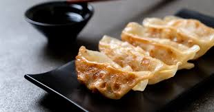

Gyoza

Description
Alongside sushi and tempura, gyozas are undoubtedly one of the most iconic dishes of Japan.
These dumplings, first fried and then steamed, closely resemble Jiaozi, from which they are partially inspired.
So, hyped by learning how to make this dish? Let's get into it!
Ingredients
- 1 tablespoon sesame oil
- 2 cups chopped cabbage
- ¼ cup chopped onion
- ¼ cup chopped carrot
- 1 clove garlic, chopped
- ½ pound ground pork
- 1 large egg
- 1 (10 ounce) package wonton wrappers
- 1 tablespoon vegetable oil
- ¼ cup water
- ¼ cup soy sauce
- 2 tablespoons rice vinegar
Steps
- Heat sesame oil in a large skillet over medium-high heat. Add cabbage, onion, carrot, and garlic; cook and stir until cabbage is limp, 3 to 4 minutes. Add ground pork and egg; cook and stir until pork is browned and crumbly, 5 to 7 minutes.
- Make the gyoza: Place about 1 tablespoon pork mixture into the center of a wonton wrapper. Fold wrapper in half over filling, then seal the edges with moistened fingers. Repeat to make remaining gyoza.
- Heat vegetable oil in a large skillet over medium-high heat. Cook gyoza in the hot skillet until lightly browned, about 1 minute per side. Add water to the skillet, reduce the heat, cover, and steam gyoza until water is gone. Remove from the heat.
- Mix soy sauce and rice vinegar together in a small bowl. Serve as a dipping sauce with gyoza.
- Enjoy!